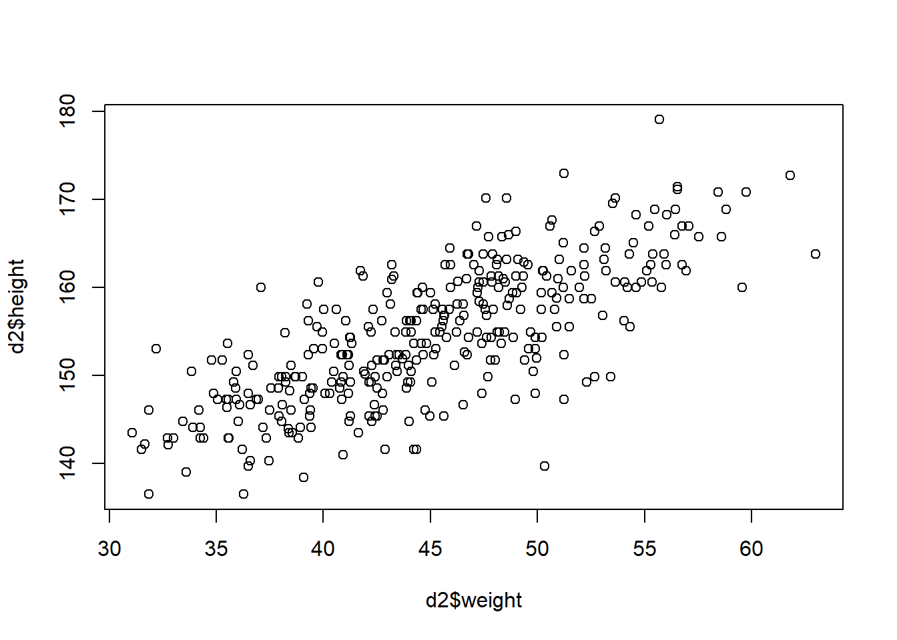
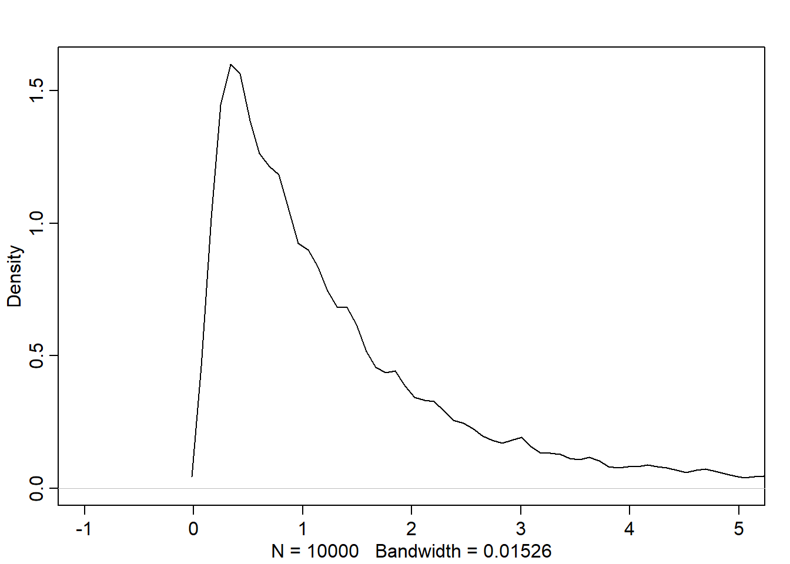
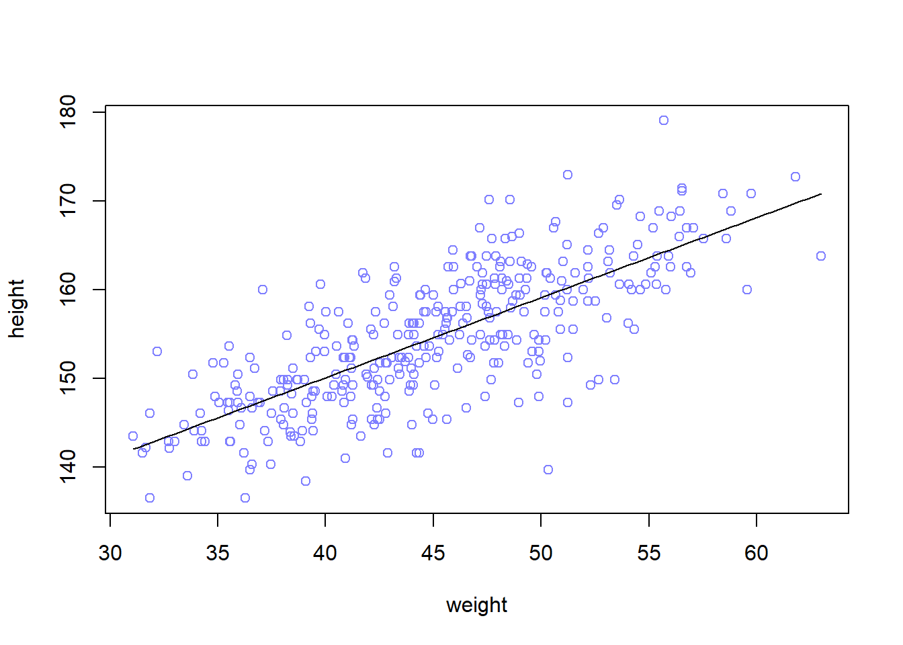
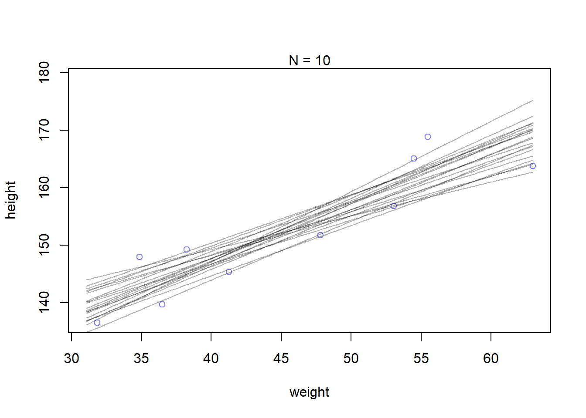
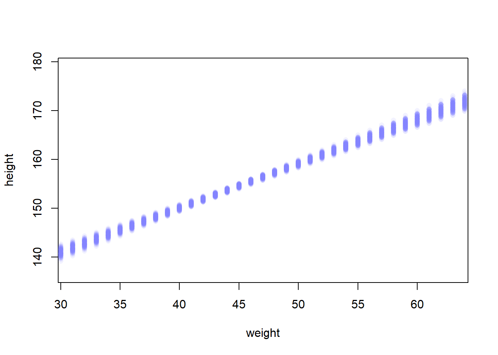
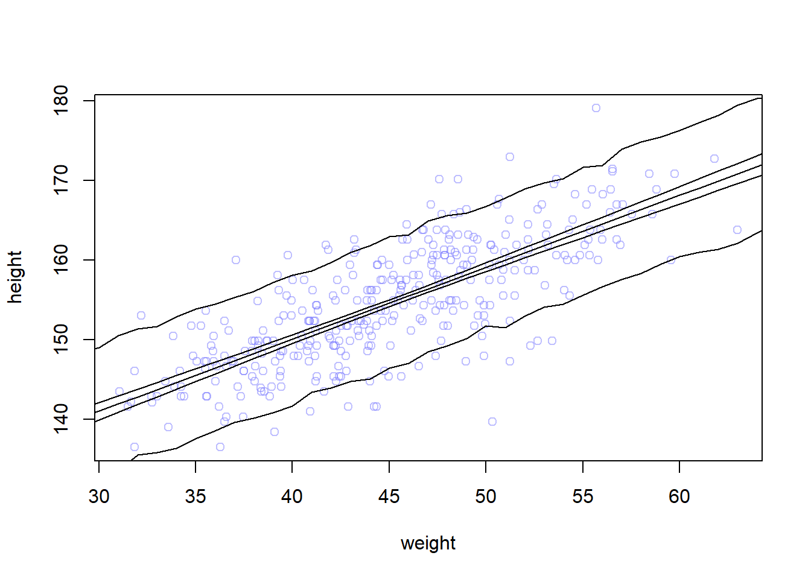

Chapter 11 Linear prediction
Using the association between predictor variables and outcome variable, we want to predict the later. This is how linear regression works.
11.1 Linear model strategy: probabilistic approach
We tell the model (golem) the following: “Assume that the predictor variable has a constant and additive relationship to the mean of the outcome. Consider all the lines (formed by the combinations of parameter values) that relate one variable (or more) to the other. Rank all of these lines by plausibility, given these data.”
The resulted model is a posterior distribution
In the following example, we want to predict the height using the weight as a predictor variable. This code plot the data to use in model fitting:

We want to use the Gaussian model of height we built in the previous chapters but making the mean of height \(\mu_i\) is a function of weights where weight values are denoted by \(x\). Here is the model:
\(h_i \sim Normal(\mu_i, \sigma)\)
\(\mu_i = \alpha + \beta(x_i - \bar{x})\)
\(\alpha \sim Normal(178, 20)\)
\(\beta \sim Normal(0, 10)\)
\(\sigma \sim Uniform(0,50)\)
Notations:
\(\bar{x}\) is the mean of weights
\(x_i\) weight at row \(i\)
\(\mu_i\) the mean of heights are row \(i\)
\(h_i\) the height at row \(i\)
\(\alpha, \beta\) are parameters to learn
Note all relationships are Stochastic except the relationship between the height mean and weight.
The parameters are made up as devices that will help us to manipulate \(\mu\). Here is what each parameter does:
- \(\alpha\) (intercept): represents the expected height when \(x_i=\bar{x}\)
- \(\beta\) (slope): represents the rate of change in expectation when \(x_i\) changes by 1 unit
11.1.1 Priors
The unobserved variables are called parameters (\(\alpha, \beta, \sigma\)) and their distributions are called priors.
Each combination of parameter values implies a unique line
Let’s simulate the prior predictive distribution to see the possible lines
set.seed(2971)
N <- 100 # 100 lines
a <- rnorm(N, 178, 20)
b <- rnorm(N, 0, 10)
# prepare the canvas for plotting
plot(NULL, xlim=range(d2$weight), ylim=c(-100,400), xlab="weight", ylab="height")
abline(h=0, lty=2) # no one is shorter than zero!
abline(h=272, lty=1, lwd=0.5) # the world's tallest person
xbar <- mean(d2$weight)
# simulate the possible lines
for (i in 1:N) curve(a[i] + b[i]*(x-xbar),
from=min(d2$weight),
to=max(d2$weight),
add=TRUE,
col=col.alpha("black", 0.2))
As we can see, not all the lines seem to represent the relationship between weight and height for human. Negative relationship doesn’t make sense in this context.
We want to restrict \(\beta\) to positive numbers so we only get positive relationship. Therefore, we can define the prior as Log-Normal instead to enforce positive relationship:
\[ \beta \sim Log-Normal(0,1) \]

We can see the distribution is defined only on the positive beta values.
Now, let’s do the prior predictive simulation again with the new prior:
set.seed(2971)
N <- 100 # 100 lines
a <- rnorm(N, 178, 20)
b <- rlnorm(N, 0, 1) # log-normal prior
# prepare the canvas for plotting
plot(NULL, xlim=range(d2$weight), ylim=c(-100,400), xlab="weight", ylab="height")
abline(h=0, lty=2) # no one is shorter than zero!
abline(h=272, lty=1, lwd=0.5) # the world's tallest person
xbar <- mean(d2$weight)
# simulate the possible lines
for (i in 1:N) curve(a[i] + b[i]*(x-xbar),
from=min(d2$weight),
to=max(d2$weight),
add=TRUE,
col=col.alpha("black", 0.2))Now, the result is much more sensible!
11.2 Finding the posterior distribution
The model is defined now along with the priors. We are now ready to build the posterior approximation using quap
library(rethinking)
data("Howell1")
d <- Howell1
d2 <- d[d$age >= 18,]
xbar <- mean(d2$weight)
# fit the model
m4.3 <- quap(
alist(
height ~ dnorm(mu, sigma),
mu <- a + b * (weight-xbar),
a ~ dnorm(178, 20),
b ~ dlnorm(0, 1),
sigma ~ dunif(0, 50)
),
data=d2
)To interpret the posterior, we can use either tables or plots. Plots gives more information about the posterior. However, let’s see the summary table:
## mean sd 5.5% 94.5%
## a 154.6013671 0.27030766 154.1693633 155.0333710
## b 0.9032807 0.04192363 0.8362787 0.9702828
## sigma 5.0718809 0.19115478 4.7663786 5.3773831We also need to see the covariance among the parameters by computing the variance-covariance matrix:
## a b sigma
## a 0.073 0.000 0.000
## b 0.000 0.002 0.000
## sigma 0.000 0.000 0.03711.2.1 Plotting the posterior against the data
plot(height~weight, data=d2, col=rangi2)
post <- extract.samples(m4.3)
a_map <- mean(post$a)
b_map <- mean(post$b)
curve(a_map + b_map * (x-xbar), add=TRUE)
## a b sigma
## 1 154.5564 0.9000245 4.768499
## 2 154.4602 0.8474034 5.136055
## 3 154.7858 0.9440438 5.313512
## 4 154.4490 0.8806246 4.683555
## 5 154.4639 0.8397176 5.18501711.2.2 Uncertainty around the mean
We want to know the uncertainty around the mean of posterior in order to determine the confidence in the relationship between predictor and outcome, since the posterior we plot in the previous step is the MAP, which is the mean of many lines formed by the posterior.
Here is a sample of possible lines:
## a b sigma
## 1 154.5564 0.9000245 4.768499
## 2 154.4602 0.8474034 5.136055
## 3 154.7858 0.9440438 5.313512
## 4 154.4490 0.8806246 4.683555
## 5 154.4639 0.8397176 5.185017Let’s see how the confident about the location of the mean changes based on data size. First, we will extract the first 10 cases and re-estimate the model:
N <- 10
dN <- d2[1:N, ]
mN <- quap(
alist(
height ~ dnorm(mu, sigma),
mu <- a+b*(weight - mean(weight)),
a ~ dnorm(178, 20),
b ~ dlnorm(0, 1),
sigma ~ dunif(0, 50)
), data=dN
)Plot 20 of these lines to see what the uncertainty looks like:
post <- extract.samples(mN, n=20)
# plot the 10 sampled cases
plot(dN$weight, dN$height,
xlim=range(d2$weight), ylim=range(d2$height),
col=rangi2, xlab="weight", ylab="height")
mtext(concat("N = ", N))
for(i in 1:20) curve(post$a[i] + post$b[i] * (x-mean(dN$weight)), col=col.alpha("black", 0.3), add=TRUE)
11.2.3 Plotting regression intervals and contours
Let’s find the quadratic posterior distribution of the mean height \(\mu\) when weight is 50 kg. This distribution represents the relative plausibility of different values of the mean:
post <- extract.samples(m4.3)
mu_at_50 <- post$a + post$b * (50-xbar)
dens(mu_at_50, col=rangi2, lwd=2, xlab="mu|weight=50")
Compatibility interval of \(\mu\) at 50 kg is:
## 5% 94%
## 158.5839 159.6832To do that for all weight values:
## num [1:1000, 1:352] 157 157 157 158 157 ...The resulted matrix contains 352 columns, each corresponds to one row in the d2 data. It contains 1000 rows, each represents a sample. Therefore, the matrix contains a distribution of \(\mu\) for each individual in the original data d2.
Let’s plot the Gaussian distribution for each mean value:
plot(height ~ weight, d2, type="n")
for(i in 1:100) points(d2$weight, mu[i,], pch=16, col=col.alpha(rangi2, 0.1))
The pile of points represents the rows.
The plot is kind of missy, let’s do that for a small group of weight values
weight.seq <- seq(from=25, to=70, by=1)
mu <- link(m4.3, data=data.frame(weight=weight.seq))
plot(height ~ weight, d2, type="n")
for(i in 1:100) points(weight.seq, mu[i,], pch=16, col=col.alpha(rangi2, 0.1))
Now, let’s summarize the distribution of mu
11.2.4 How link works
This approach can be used to generate posterior predictions for any component of any model
11.2.5 Summary: recipe of generating predictions and intervals from the posterior
- Use
linkto generate distributions posterior values for \(\mu\) - Use
meanorPIto find averages and bounds of \(\mu\) for each value of the predictor variable - Plot the lines and intervals using
linesandshadesor the distribution of the prediction given the value of predictor(s)
11.3 Prediction intervals
What we’ve done so far is just use samples from the posterior to visualize the uncertainty in \(\mu_i\). Now, we want to compute the predictions of heights that’s distributed according to: \(h_i \sim Normal(\mu_i, \sigma)\)
Let’s simulate heights:
# simulate 1e3 data by default
sim.height <- sim(m4.3, data=list(weight=weight.seq))
str(sim.height)## num [1:1000, 1:46] 146 139 136 135 138 ...The resulted matrix contains 1000 simulated heights (rows) for 46 weight values (columns). Let’s summarize it:
## [,1] [,2] [,3] [,4] [,5] [,6] [,7]
## 5% 128.1853 129.4536 130.1615 131.0184 131.5920 132.3106 133.6148
## 94% 144.4269 145.3213 146.0324 147.5608 148.3459 149.0710 150.5475
## [,8] [,9] [,10] [,11] [,12] [,13] [,14]
## 5% 135.5421 135.8942 136.3520 137.6058 138.6176 139.6518 140.1450
## 94% 151.3630 151.7098 152.9104 153.9036 154.4739 155.3530 156.1087
## [,15] [,16] [,17] [,18] [,19] [,20] [,21]
## 5% 140.8575 141.6930 143.4392 143.9476 144.7856 145.0695 146.4285
## 94% 157.2042 158.1098 158.6873 159.7029 160.9985 161.8457 162.9799
## [,22] [,23] [,24] [,25] [,26] [,27] [,28]
## 5% 147.0674 148.4928 149.2981 150.1580 151.7772 151.4979 152.9998
## 94% 163.1741 164.9025 165.5837 165.9044 166.7547 167.7817 168.9641
## [,29] [,30] [,31] [,32] [,33] [,34] [,35]
## 5% 154.1103 154.4654 155.6601 156.6560 157.6031 158.3161 159.5117
## 94% 169.7019 170.2732 171.7155 171.8713 173.9521 174.8402 175.4895
## [,36] [,37] [,38] [,39] [,40] [,41] [,42]
## 5% 160.4609 160.9952 161.3552 162.1338 163.4090 164.5611 165.1676
## 94% 176.2916 177.2782 178.1800 179.4627 180.3177 180.4383 181.5567
## [,43] [,44] [,45] [,46]
## 5% 165.5014 167.6589 168.1717 168.8493
## 94% 182.5953 183.3265 184.1630 185.3150Now, height.PI contains the 89% (we can use any interval) posterior prediction interval of observable heights across the values of weights in weight.seq (i.e. the boundaries of the simulated heights the model expects)
Let’s plot everything: 1. the average line (MAP line) 2. shaded region of 89% plausible \(\mu\) 3. boundaries of the simulated heights the model expects
# plot data points
plot(height ~ weight, d2, col=col.alpha(rangi2, 0.5))
# draw MAP line
lines(weight.seq, mu.mean)
# i used the border because the shade is not appearing for a bug related to R version
shade(mu.PI, weight.seq,border=TRUE)
shade(height.PI, weight.seq, border = TRUE)
The narrow boundaries that are close to the line are the intervals of \(\mu\). The wider boundary is the region within which the model expects to find 89% of actual heights in the population at each weight.
The rouglness around the prediction interval is due to the simulation variance. We can decrease that by increasing the number of samples we take from the posterior.
sim.height <- sim(m4.3, data=list(weight=weight.seq), n=1e4)
height.PI <- apply(sim.height, 2, PI, prob=0.89)
# plot data points
plot(height ~ weight, d2, col=col.alpha(rangi2, 0.5))
# draw MAP line
lines(weight.seq, mu.mean)
# i used the border because the shade is not appearing for a bug related to R version
shade(mu.PI, weight.seq,border=TRUE)
shade(height.PI, weight.seq, border = TRUE)